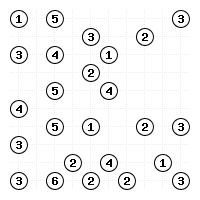
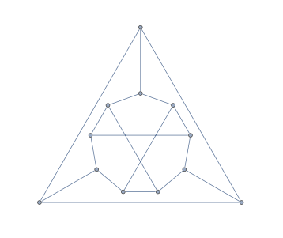

I've posted the notes, topics, and new definitions for each day and what is expected of you in and out of class. This schedule is approximate and subject to change! Check back here often.
Graph Theory Basics (3 classes)
Monday, August 29
Before Class:
- Visit and explore our Microsoft Teams Group
- Visit our Microsoft Teams group. Log in with username FirstName.LastName##@login.cuny.edu instead of FirstName.LastName##@qmail.cuny.edu.
- Go to the Introductions channel. Introduce yourself to your classmates and share a fun link or meme. Please feel free to reply to a fellow classmate's post if something they share speaks to you.
- Go to the Chat section of Microsoft Teams on the far left menu. (Note: This is outside the "Graph Theory Team".) Send me (Christopher Hanusa) a quick note with a quick "Hello this is" message and the name you prefer to be called. Feel free to include your preferred pronouns. Think of this as opening a dialog with me that we can continue throughout the semester when you need to get in contact with me.
- Thoroughly read all pages of the course webpage. This should answer all the questions that you may have about the class. Make sure you read carefully about how standards-based grading works.
- Fill out this Doodle to let me know when you are available for office hours this semester. (Pretend like it is a normal week with no holidays &emdash; select the times when you would be able to come to office hours regularly.) I will try to choose times that work for most people.
In class:
- Notes from Section 1.1 (Notes pages 0–15) ' (Distributed in class today only.)
- Syllabus discussion.
- What is a graph?
- How to describe a graph.
- Degree sequence of a graph.
- Degree sequence of a graph.
- Theorem 1.1.2.
New definitions: graph, vertex, edge, finite graph, multiple edges, loop, simple graph, adjacent, neighbors, incident, endpoint, degree, degree sum, isolated vertex, leaf, end vertex, degree sequence, graphic, Havel-Hakimi algorithm
Wednesday, August 31
Before Class:
- Complete the "Before Class" activities from August 29 if you did not yet do so.
- (Download / Print out) the notes for class (links below). (Do this daily.)
- Background reading: Pearls in Graph Theory, Sections 1.1 and 1.2.
- In your notebook, complete the definition exercise for the following terms. If anything is unclear, ask about it on the discussion board.
- incident, simple graph, graphic sequence, .
- Prepare to share answers to the following questions in class.
- Exploration Question:
- Question E1. Give an example of where you have seen graphs in real life. (Do not use the examples from class unless you have a unique perspective.)
- Explain what corresponds to the abstract concepts of vertices, edges, and vertex degree.
- Discuss whether a vertex can have a degree of zero or one in your scenario.
- Proof Question:
- Question P1. Seven students go on vacation. They agree that everyone should send a postcard to three of the others.
- Can this happen? Explain.
- Can each student receive postcards from precisely the three to whom they send postcards? Explain.
In class:
- Homework Discussion
- Proof of Theorem 1.1.2.
- Notes from Section 1.2 (Notes pages 16–24) '
- A dictionary of graphs.
- Schlegel diagrams of Platonic solids.
- When are two graphs the same?
New definitions: path graph Pn, cycle Cn, complete graph Kn, bipartite graph, complete bipartite graph Km,n, wheel graph Wn, star graph Stn, cube graph, Petersen graph, Grotzsch graph, Platonic solid, Schlegel diagram, Tetrahedron, Cube, Octahedron, Dodecahedron, Icosahedron
Isomorphisms, Trees, and Forests (2 classes)
No class Monday, September 5 (Labor Day)
Wednesday, September 7
Before Class:
- Background reading: Pearls in Graph Theory, Section 1.2
- Complete the definition exercise for the following terms:
- bipartite graph, complete bipartite graph Km,n, Schlegel diagram
- Prepare to answer the following thought questions in class.
- Exploration Questions:
- Question E2. Find two simple graphs that have at least five vertices and that have the same degree sequence, where one of them is a tree and where the other is not a tree
- Question E3. Draw the Schlegel diagram for two of the following polyhedra: Icosidodecahedron, Truncated Icosahedron, Rhombicuboctahedron, Permutohedron of order 4, Snub Cube. (You will have to do some investigating to determine what these polyhedra are.)
- Proof Questions:
- Question P2. Are any of these degree sequences graphic?
- 5 5 4 4 3 2 2
- 6 6 4 4 4 2 2
- 6 6 6 6 6 6
- 6 6 6 6 6 6 6
- Question P3. Prove that no graph has all degrees different. That is, prove that in a degree sequence of a graph, there is at least one repeated number.
In class:
- Homework Discussion
- When are two graphs the same?
- Finding Isomorphisms
New definitions: equal graphs, isomorphic graphs
Monday, September 12
Before Class:
- Background reading: Pearls in Graph Theory, Section 1.2
- Complete the definition exercise for the following terms:
- isomorphic graphs
- Prepare to answer the following thought questions in class.
- Exploration Questions:
- Question E4. Exercise 1.3.16: There are only two non-isomorphic graphs with degree sequence (6,3,3,3,3,3,3). Find them.
- Proof Questions:
- Question P4. Consider the graphs in Figure 1.2.4. Are any two of them isomorphic? Prove you are correct.
- Question P5. Consider the graphs in Figure 1.2.7. Are any two of them isomorphic? Prove you are correct.
- Our first assessment will be Wednesday on Standards 1 and 2.
In class:
- Homework Discussion
- Larger graphs from smaller graphs.
- Smaller graphs from larger graphs.
- Groupwork on definitions.
- Notes from Section 1.3. (Notes pages 25–32) '
- Connected graphs
New definitions: disjoint union, union, graph complement, self-complementary graph, subgraph, induced subgraph, proper subgraph
Wednesday, September 14
Before Class:
- Background reading: Pearls in Graph Theory, Section 1.3
- Complete the definition exercise for the following terms:
- induced subgraph
- Prepare to answer the following thought questions in class.
- Exploration Questions:
- Question E5.
(a) Determine the complement of the graph Km,n if m, n≥3.
(b) Prove or disprove: Every induced subgraph of a wheel graph Wn for n≥3 contains a cycle.
(a) If G is a k-regular graph, what can you say about Gc?
(b) If G is a connected graph, what can you say about Gc? - Proof Questions:
- Question P6.
(a) Prove that if n is large enough, then the following statement is true: "For all graphs on n vertices, either G or Gc contains a cycle.
(b) For which n does this start to be true? - Prepare to take the assessment on Standards 1 and 2.
In class:
- Assessment 1 on Standards 1 and 2.
- Homework Discussion
- (No new notes)
- Lemma A. If there is a path from a to b in G and a path from b to c in G, then there is a path from a to c in G.
- Lemma B. Let G be a connected graph. Suppose that G contains a cycle C and e is an edge of C. The graph H=G \ e is connected.
- Theorem 1.3.1.
New definitions: path in G from a to b, connected graph
Coloring (4 classes)
Monday, September 19
Before Class:
- Background reading: Pearls in Graph Theory, Sections 1.3 and 2.1
- Complete the definition exercise for the following terms:
- connected graph
- Prepare to answer the following thought questions in class.
- Exploration Questions:
- Question E6. Sudoku is sooo last decade! Solve this Hashi puzzle.

Instructions: Draw in lines to connect the circles such that:- Lines must be either perfectly vertical or horizontal.
- Up to two lines may be drawn connecting the same circles.
- The lines may not cross.
- The degree of each vertex is the enclosed number.
- The entire graph must be connected.
- Proof Questions:
- Question P7. Let G be a connected regular graph with 22 edges. What are the possible number of vertices that G may have?
In class:
- Theorems 1.3.2, 1.3.3, and 1.3.5.
- Trees and forests.
- Theorems 2.4.1 and 3.2.1
- Notes from Section 2.1 (Notes pages 33–39) '
- (Vertex) coloring, proper coloring
- Chromatic number
- Lemma C. If H is a subgraph of G, then χ(H)≤χ(G).
New definitions: tree, forest, bridge, (vertex) coloring, proper coloring, chromatic number
Wednesday, September 21
Before Class:
- Read the initial information about the course project.
- Complete the definition exercise for the following terms:
- bridge, proper coloring
- Prepare to answer the following thought questions in class.
- Exploration Questions:
- Question E7. Let G be a graph with n vertices and n edges.
(a) Suppose G is connected. How many cycles does G have? Prove it.
(b) Suppose G is NOT connected. What can you say about the number of cycles in the graph? Can you determine a formula? - Proof Questions:
- Question P8. For some k greater than or equal to 2, find a k-regular graph that has a bridge.
- Question P9. Consider a tree T that has only vertices of degree 1, 2, and 3. Suppose that T has exactly 10 vertices of degree 3. Find and prove how many leaves T has.
- Background reading for class: Pearls in Graph Theory, Section 2.1
In class:
- Homework Discussion
- (No new notes)
- clique, clique number
- Critical graphs
- Bipartite graphs
New definitions: clique, clique number, critical graph, bipartite graph
Careful with this week's schedule! There is no class Monday, September 26 (Rosh Hashanah); instead there is class on Thursday, September 29!
Wednesday, September 28
Before Class:
- Prepare to take the assessment on Standards 3 and 4.
- Complete the definition exercise for the following terms:
- critical
- Prepare to answer the following thought questions in class.
- Question 10. Determine the chromatic number of the dodecahedron graph.
- Question 11. Determine the chromatic number of the Sierpinski Graph of order n. Prove your result by induction.
- Question 12. Is Figure 2.1.5 critical? Justify. [Don't believe everything you read!]
- Question 13. For which n is Wn critical? Prove your claim.
- Background reading: Pearls in Graph Theory, Section 2.2
In class:
- Assessment 2 on Standards 3 and 4.
- Homework Discussion
New definitions: edge coloring, edge chromatic number, snark, turning trick
Thursday, September 29
Before Class:
- Background reading: Pearls in Graph Theory, Section 2.2
In class:
- Homework Discussion
- Theorem 2.1.6
- Notes from Section 2.2 (Notes pages 40–45) '
- Edge coloring
- Vizing's Theorem
- Snarks
- Edge chromatic number of complete graphs
Cycles and Circuits (4 classes)
Monday, October 3
Before Class:
- Complete the definition exercise for the following terms:
- snark, turning trick
- Prepare to answer the following thought questions in class.
- Question 14. Is K4 a snark?
- Question 15. Prove or disprove: If H is a subgraph of G, then χ'(H)≤χ'(G).
- Question 16. Determine the edge chromatic number of the dodecahedron graph.
- Question 17. Determine the edge chromatic number of the Sierpinski Graph of order n
- Challenge Question. Consider the (highly!) infinite graph G=(V,E) where V consists of every point in the 2D plane and there is an edge between any two vertices distance 1 unit apart. [For example, vertex (0,0) is connected by an edge to infinitely many points!: those on the unit circle.] Show that the chromatic number of this graph is at least 4. [The exact chromatic number is unknown; it is either 4, 5, 6, or 7.]
- Background reading: Pearls in Graph Theory, Section 2.3
In class:
- Homework Discussion
- Notes from Section 2.3 and Knight's Tours. (Notes pages 46–53) '
- Hamiltonian cycles
New definitions: Hamiltonian cycle, Hamiltonian path, knight's tour
There is no class Wednesday, October 5 (Yom Kippur) nor Monday, October 10.
Wednesday, October 12
Before Class:
- Start to think about the topic you want to investigate for your project.
- Prepare to take the assessment on Standards 5 and 6.
- Prepare to answer the following thought questions in class.
- Question 18. Which of the graphs in Figure 1.2.5 are Hamiltonian?
- Question 19. How long of a knight's path can you find manually on this website? Take a screenshot.
- Background reading: Pearls in Graph Theory, Section 3.1
In class:
- Assessment 3 on Standards 5 and 6.
- Homework Discussion
- Knight's Tours
- History of Knight's Tours: Knight's Tours by Ben Hill and Kevin Tostado
- Knight's Tours on a Torus by John Watkins and Rebecca Hoenigman
New definitions: knight's tour
Monday, October 17
Before Class:
- Start to think about the topic you want to investigate for your project. Submit your proposal by Wednesday, October 19.
- Prepare to take the assessment on Standards 5 and 6.
- Prepare to answer the following thought questions in class.
- Question 20. Prove directly that there is no closed knight's tour on the 3×8 grid.
- Question 21. Find a closed knight's tour on the 3×5 torus.
- Background reading: Pearls in Graph Theory, Section 3.1
In class:
- Homework Discussion
- Notes from Section 3.1 (Notes pages 54–60) '
- Vocabulary of pseudographs.
- Eulerian circuits.
- Thm 3.1.2. Even degrees implies Eulerian.
- Eulerian Trails.
New definitions: knight's tour pseudograph, walk, trail, path, circuit, cycle, loop, Eulerian circuit, Eulerian trail
Wednesday, October 19
Before Class:
- Submit your proposed project topic.
- Make sure you have processed the definitions of the different types of "walks".
- Prepare to answer the following thought questions in class.
- Question 22.
(a) Find a graph E that has an Eulerian circuit but no Hamiltonian cycle.
(b) Find a graph H that has a Hamiltonian cycle but no Eulerian circuit.
[If either is impossible, prove why you can not find such a graph.] - Question 23. Find a one-way Eulerian trail in the graph of Figure 3.3.6. (p. 67)
[Note: A discussion of one-way Eulerian trails in infinite graphs occurs above the figure.]
In class:
- Homework Discussion
- Notes on Directed Graphs and de Bruijn sequences (Notes pages 61–66) '
- Directed graphs (digraphs)
- digraph definitions
- Existence of an Eulerian circuit in a digraph
- de Bruijn sequences.
New definitions: directed graph, in-degree, out-degree, strongly connected digraph, de Bruijn sequence, de Bruijn graph
Planarity (4 classes)
Monday, October 24
Before Class:
- Send Prof. Hanusa a message with your project topic. If you do not have a topic yet, please plan to meet with Prof. Hanusa to discuss.
- Prepare to answer the following thought questions in class.
- Question 24. Complete the activity on the last page of the set of notes about de Bruijn sequences. Did you get the same de Bruijn sequence (up to rotation) that was given in the notes?
- Question 25. Find a de Bruijn sequence on the alphabet {a,b,c} of order 2.
- Background reading: Pearls in Graph Theory, Section 8.1
- The assessment on Standards 7 and 8 will be on Wednesday 10/26.
In class:
- Homework Discussion
- Notes from Section 8.1 (Notes pages 67–73) '
- Planar graphs.
- Euler's Formula.
- Maximal planar graphs.
- Numerical Conditions on Planar Graphs.
New definitions: drawing, simple curve, plane drawing, plane graph, planar graph, region, face, outside face, maximal planar
Wednesday, October 26
Before Class:
- Prepare to take the assessment on Standards 7 and 8.
- Definition check: Compare and constrast the definitions of plane drawing and planar graph. Make sure you are able to understand the difference.
- Prepare to answer the following thought questions in class.
- Question 26. 8.1.9abc [In part (c), add edges—do not subtract them.]
- Question 27. Find and prove an "Euler's formula" for disconnected planar graphs.
- Background reading: Pearls in Graph Theory, Section 8.2
In class:
- Assessment 4 on Standards 7 and 8.
- Homework Discussion
- Notes from Section 8.2 (Notes pages 74–78) '
- Maps, normal maps.
- Four Color Theorem (not proved).
- History of the four color theorem.
New definitions: girth
Monday, October 31
Before Class:
- Finalize your project topic. Ensure that you have found some sources that you can use for your project. If your sources have not yet been approved by Prof. Hanusa, please send a link to the source through Teams or by email.
- Prepare to answer the following thought questions in class.
- Question 28. Use an argument involving girth to prove that the Petersen graph is not planar.
- Gain Intuition: Play the planarity game at https://www.jasondavies.com/planarity/. Can you solve a graph with 10 vertices? 15? 20? 30? More? Take a screen shot of the last level you completed and share it on our Discussion Board.
- Background reading: Pearls in Graph Theory, Sections 8.2 and 8.3
In class:
- Homework Discussion
- Notes from Section 8.2 (Notes pages 74–78) '
- Maps, normal maps.
- Four Color Theorem (not proved).
- History of the Four Color Theorem.
- Notes from Section 8.3 (Notes pages 79–84) '
- Six Color Theorem (proved)
New definitions: dual graph, map, normal map, Four Color Theorem
Wednesday, November 2
Before Class:
- Prepare to answer the following thought questions in class.
- Question 29. Show that for all n, the wheel graph Wn is self-dual.
- Question 30. Find a graph that has two non-isomorphic dual graphs. [Hint: Look for different planar embeddings.]
- Gain Intuition: Find a four coloring of this map: https://www.geogebra.org/m/pjPgJdhV. Another game to build intuition is here: https://www.kongregate.com/games/toweld/four-color-theorem-coloring-puzzle-game (You don't need to sign up for an account.)
- Background reading: Pearls in Graph Theory, Sections 8.3 and 9.1
- The assessment on Standards 9 and 10 will be on Monday 11/7.
In class:
- Homework Discussion
- Five Color Theorem (proved)
- Kempe Chains argument
- Notes from Section 9.1 (Notes pages 85–88) '
- Modifications of graphs.
- Kuratowski's Theorem.
New definitions: Kempe chain, deletion, contraction, minor, subdivision
Graph Algorithms (6 classes)
Monday, November 7
Before Class:
- Prepare to take the assessment on Standards 9 and 10.
- Make sure you are comfortable with the Kempe Chains argument.
- Prepare to answer the following thought questions in class.
- Question 31. Try to prove the Four Color Theorem by emulating the argument from class using Kempe Chains. What goes wrong?
- Question 32.
(a) Find a graph G with degree sequence (4, 4, 3, 3, 3, 3) such that G is planar. Prove it.
(b) Find a graph H with degree sequence (4, 4, 3, 3, 3, 3) such that H is non-planar. Prove it. - Question 33. Prove that the graph G in Figure 9.1.18 (p. 189) is non-planar using two methods:
(a) Find a subdivision of K3,3 or K5 that is a subgraph of G.
(b) Through a series of edge deletions and edge contractions, show that either K3,3 or K5 is a minor of G. - Question 34. Prove that the Petersen graph is a minor of this graph:
 - Background reading: Pearls in Graph Theory, Section 7.2
In class:
- Assessment 5 on Standards 9 and 10.
- Homework Discussion
Wednesday, November 9
Before Class:
- Prepare to answer the following thought questions in class.
- Question 35. A disconnecting set is a set of edges in a connected graph that, when removed, disconnects the graph. Give an example of a minimal disconnecting set that is not a minimum disconnecting set.
- Question 36. Give an example of a graph that does not have a perfect matching. Explain why it does not have a perfect matching. What is the maximum matching in your graph?
- Background reading: Pearls in Graph Theory, Section 7.2
In class:
- Homework Discussion
- Notes from Section 7.2 and more (Notes pages 89–97) '
- Matchings.
- Maximum vs. maximal.
- Algorithms.
- Hungarian algorithm.
New definitions: matching, maximal, maximum, algorithm, correctness, Hungarian algorithm, M-alternating path, M-augmenting path
Monday, November 14
Before Class:
- Collect some information about your project topic. Remember that by Monday 11/21, you will be turning in an outline about what you will be including in your presentation.
- Prepare to answer the following thought questions in class.
- Question 35. A disconnecting set is a set of edges in a connected graph that, when removed, disconnects the graph. Give an example of a minimal disconnecting set that is not a minimum disconnecting set.
- Question 36. Give an example of a graph that does not have a perfect matching. Explain why it does not have a perfect matching. What is the maximum matching in your graph?
- Question 37. A spanning tree in a connected graph G is a subgraph T that includes every vertex of G. Prove the correctness of the following algorithm to find a spanning tree of a graph. [Remember: Prove that the algorithm terminates and that it gives the desired output.]
Input: A connected graph G with n vertices.
Preprocess: Label the vertices 1 through n, color them all white. Let T be a set of edges, initially empty.
Repeat: For the lowest numbered white vertex v, order the edges incident with v based on the labels of the adjacent vertices. Going through each edge e from first to last, determine if including e in T would create a cycle in T. If it would not create a cycle, place e into T (T is growing.) If it would create a cycle, do not add e to T; go on to the next edge. Once every incident edge to v has been checked, color v black. If all vertices are black, go on to the next step. Otherwise, repeat this step.
Output: Output the graph T, a spanning tree of G. - Background reading: Pearls in Graph Theory, Section 7.2
- The assessment on Standards 11, 12, and 13 will be on Wednesday 11/16.
In class:
- Homework Discussion
- Correctness of the Hungarian algorithm.
- Notes about stable marriages (Notes pages 98–106) '
- Stable marriages.
- The play.
New definitions: set of stable marriages, Gale-Shapley Algorithm, human-optimal stable marriages
Wednesday, November 16
Before Class:
- Prepare to take the assessment on Standards 11, 12, and 13.
- Prepare to answer the following thought questions in class.
- Question 38. Use the Hungarian algorithm to solve problem 7.2.2. Use the initial matching M = {(a, 4), (c, 6), (e, 2), (h, 5)}.
In class:
- Assessment 6 on Standards 11, 12, and 13.
- Homework Discussion
- Correctness of the Gale-Shapley Algorithm.
- Proof of human-optimality.
Monday, November 21
Before Class:
- Turn in an outline about what you will be including in your presentation for your project. What are the key definitions you will be teaching? What are the key results you will be sharing?
- Prepare to answer the following thought questions in class.
- Question 39. Run the Gale-Shapley algorithm twice on the following sets of preferences, once with the people proposing, and once with the pets proposing. Discuss how your results are related to the theorems on optimality and pessimality.
Pets’ Preferences Art Bettie Casper Delphi Ernie First Choice: F F G G H Second Choice: G H I H F Third Choice: I I F J I Fourth Choice: J G H I G Fifth Choice: H J J F J Human’s Preferences Fei Georg Helen Ivan Jin First Choice: C E A E B Second Choice: B B D C D Third Choice: E C B A A Fourth Choice: A A E B C Fifth Choice: D D C D E
In class:
- Homework Discussion
- Notes about network flow (Notes pages 107–119) '
- Networks.
New definitions: network, flow, throughput of a flow, cut, max flow, min cut
Wednesday, November 23
Before Class:
- The assessment on Standards 14 and 15 will be on Monday 11/28.
In class:
- Homework Discussion
- Flow in a network, MAX FLOW.
- Edge cuts, MIN CUT.
New definitions: flow companion graph, flow augmenting path, Ford-Fulkerson Algorithm
Happy Thanksgiving everyone!!!!
•••••• Please fill out the college-wide course evaluations, distinct from the course evaluations that will be given out in class. Thank you for your feedback! ••••••
Monday, November 28
Before Class:
- Prepare to answer the following thought questions in class.
- Question 40.
(a) List all st-cuts in the network pictured below (there are eight). Find the capacity of each st-cut and determine the min cut from this information.
(b) Next, find a maximum flow for the network and verify that it is a max flow.
(c) Last, verify that the max flow / min cut theorem holds for this network.
[Important: Do NOT use the Ford-Fulkerson algorithm in this problem.] - Prepare to take the assessment on Standards 14 and 15.
In class:
- Assessment 7 on Standards 14 and 15.
- Homework Discussion
- Proof of correctness of Ford-Fulkerson algorithm.
Wednesday, November 30
Before Class:
- Prepare to answer the following thought questions in class.
- Question 41. Use the Ford-Fulkerson algorithm to find the max flow and min cut on the attached network. Prove that your flow is a max flow and your st-cut is a min cut.
- The assessment of Standards 16 and 17 will be next Wednesday, December 7.
In class:
- Homework Discussion
- Ford-Fulkerson examples and discussion.
Monday, December 5
Before Class:
- Work to get your project (presentation and essay) into a complete state and bring it to class for a directed peer review session.
In class:
- Peer review session.
Wednesday, December 7
Before Class:
- Improve your project with the feedback given by your classmates.
- Prepare to take the assessment on Standards 16 and 17 and any other reassessments you need.
In class:
- Assessment 8 on Standards 16 and 17.
- Time for reassessments or more feedback on your project.
- We will determine a plan for who will present on which presentation day.
Monday, December 12
- Presentations
Monday, December 19, 1:45pm–3:45pm (Final Exam Period)
- Presentations